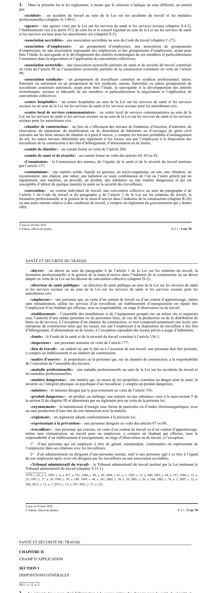

art-1-LSST : définitions générales de la loi
- Portée : les définitions valent pour toute la loi et pour ses règlements, sauf si le contexte impose un autre sens.
- « travailleur » : la personne qui exécute un travail pour un employeur, même sans rémunération, l'étudiant en stage compris ; deux exclusions, 1° gérant, surintendant, contremaître ou représentant de l'employeur dans ses relations avec les travailleurs, 2° administrateur ou dirigeant d'une personne morale, sauf s'il a été désigné par les travailleurs ou une association accréditée.
- « employeur » : la personne qui, par contrat de travail ou d'apprentissage, même sans rémunération, utilise les services d'un travailleur ; l'établissement d'enseignement est réputé employeur de son étudiant en stage.
- Trois notions de lieu à ne pas confondre : l'établissement exclut le chantier de construction et les locaux privés d'habitation, le chantier a sa propre définition, et le lieu de travail est le plus large, tout endroit où une personne doit être présente par le fait ou à l'occasion de son travail.
- Définitions qui commandent le reste de la loi, chacune renvoyant à son article : Commission (art. 137), inspecteur (art. 177), représentant à la prévention (art. 87 ou 88), comité de santé et de sécurité (art. 68, 69 ou 82), association sectorielle (art. 98 ou 99), plus contaminant, matière dangereuse et produit dangereux.
🌐 LegisQuébec · 📄 PDF officiel (page 4)
Texte officiel
Dans la présente loi et les règlements, à moins que le contexte n’indique un sens différent, on entend par:
« accident » : un accident du travail au sens de la Loi sur les accidents du travail et les maladies professionnelles (chapitre A-3.001);
« agence » : une agence visée par la Loi sur les services de santé et les services sociaux (chapitre S-4.2), l’établissement visé à la partie IV.2 de cette loi et le conseil régional au sens de la Loi sur les services de santé et les services sociaux pour les autochtones cris (chapitre S-5);
« association accréditée » : une association accréditée au sens du Code du travail (chapitre C-27);
« association d’employeurs » : un groupement d’employeurs, une association de groupements d’employeurs ou une association regroupant des employeurs et des groupements d’employeurs, ayant pour buts l’étude, la sauvegarde et le développement des intérêts économiques de ses membres et particulièrement l’assistance dans la négociation et l’application de conventions collectives;
« association sectorielle » : une association sectorielle paritaire de santé et de sécurité du travail constituée en vertu de l’article 98 ou l’association sectorielle paritaire de la construction constituée en vertu de l’article 99;
« association syndicale » : un groupement de travailleurs constitué en syndicat professionnel, union, fraternité ou autrement ou un groupement de tels syndicats, unions, fraternités ou autres groupements de travailleurs constitués autrement, ayant pour buts l’étude, la sauvegarde et le développement des intérêts économiques, sociaux et éducatifs de ses membres et particulièrement la négociation et l’application de conventions collectives;
« centre hospitalier » : un centre hospitalier au sens de la Loi sur les services de santé et les services sociaux ou au sens de la Loi sur les services de santé et les services sociaux pour les autochtones cris;
« centre local de services communautaires » : un centre local de services communautaires au sens de la Loi sur les services de santé et les services sociaux ou au sens de la Loi sur les services de santé et les services sociaux pour les autochtones cris;
« chantier de construction » : un lieu où s’effectuent des travaux de fondation, d’érection, d’entretien, de rénovation, de réparation, de modification ou de démolition de bâtiments ou d’ouvrages de génie civil exécutés sur les lieux mêmes du chantier et à pied d’oeuvre, y compris les travaux préalables d’aménagement du sol, les autres travaux déterminés par règlement et les locaux mis par l’employeur à la disposition des travailleurs de la construction à des fins d’hébergement, d’alimentation ou de loisirs;
« comité de chantier » : un comité formé en vertu de l’article 204;
« comité de santé et de sécurité » : un comité formé en vertu des articles 68, 69 ou 82;
« Commission » : la Commission des normes, de l’équité, de la santé et de la sécurité du travail instituée par l’article 137;
« contaminant » : une matière solide, liquide ou gazeuse, un micro-organisme, un son, une vibration, un rayonnement, une chaleur, une odeur, une radiation ou toute combinaison de l’un ou l’autre généré par un équipement, une machine, un procédé, un produit, une substance ou une matière dangereuse et qui est susceptible d’altérer de quelque manière la santé ou la sécurité des travailleurs;
« convention » : un contrat individuel de travail, une convention collective au sens du paragraphe d de l’article 1 du Code du travail et du paragraphe g de l’article 1 de la Loi sur les relations du travail, la formation professionnelle et la gestion de la main-d’oeuvre dans l’industrie de la construction (chapitre R-20) ou une autre entente relative à des conditions de travail, y compris un règlement du gouvernement qui y donne effet;
« décret » : un décret au sens du paragraphe h de l’article 1 de la Loi sur les relations du travail, la formation professionnelle et la gestion de la main-d’oeuvre dans l’industrie de la construction ou un décret adopté en vertu de la Loi sur les décrets de convention collective (chapitre D-2);
« directeur de santé publique » : un directeur de santé publique au sens de la Loi sur les services de santé et les services sociaux ou au sens de la Loi sur les services de santé et les services sociaux pour les autochtones cris;
« employeur » : une personne qui, en vertu d’un contrat de travail ou d’un contrat d’apprentissage, même sans rémunération, utilise les services d’un travailleur; un établissement d’enseignement est réputé être l’employeur d’un étudiant qui effectue, sous sa responsabilité, un stage d’observation ou de travail;
« établissement » : l’ensemble des installations et de l’équipement groupés sur un même site et organisés sous l’autorité d’une même personne ou de personnes liées, en vue de la production ou de la distribution de biens ou de services, à l’exception d’un chantier de construction; ce mot comprend notamment une école, une entreprise de construction ainsi que les locaux mis par l’employeur à la disposition du travailleur à des fins d’hébergement, d’alimentation ou de loisirs, à l’exception cependant des locaux privés à usage d’habitation;
« fonds » : le Fonds de la santé et de la sécurité du travail constitué à l’article 136.1;
« inspecteur » : une personne nommée en vertu de l’article 177;
« lieu de travail » : un endroit où, par le fait ou à l’occasion de son travail, une personne doit être présente, y compris un établissement et un chantier de construction;
« maître d’oeuvre » : le propriétaire ou la personne qui, sur un chantier de construction, a la responsabilité de l’exécution de l’ensemble des travaux;
« maladie professionnelle » : une maladie professionnelle au sens de la Loi sur les accidents du travail et les maladies professionnelles;
« matière dangereuse » : une matière qui, en raison de ses propriétés, constitue un danger pour la santé, la sécurité ou l’intégrité physique ou psychique d’un travailleur, y compris un produit dangereux;
« ministre » : le ministre désigné par le gouvernement en vertu de l’article 336;
« produit dangereux » : un produit, un mélange, une matière ou une substance visés à la sous-section 5 de la section II du chapitre III et déterminés par un règlement pris en vertu de la présente loi;
« rayonnement » : la transmission d’énergie sous forme de particules ou d’ondes électromagnétiques, avec ou sans production d’ions lors de son interaction avec la matière;
« règlement » : un règlement adopté conformément à la présente loi;
« représentant à la prévention » : une personne désignée en vertu des articles 87 ou 88;
« travailleur » : une personne qui exécute, en vertu d’un contrat de travail ou d’un contrat d’apprentissage, même sans rémunération, un travail pour un employeur, y compris un étudiant qui effectue, sous la responsabilité d’un établissement d’enseignement, un stage d’observation ou de travail, à l’exception:
1° d’une personne qui est employée à titre de gérant, surintendant, contremaître ou représentant de l’employeur dans ses relations avec les travailleurs;
2° d’un administrateur ou dirigeant d’une personne morale, sauf si une personne agit à ce titre à l’égard de son employeur après avoir été désignée par les travailleurs ou une association accréditée;
« Tribunal administratif du travail » : le Tribunal administratif du travail institué par la Loi instituant le Tribunal administratif du travail (chapitre T-15.1).
Texte de l’article 1 LSST, extrait de la couche texte du PDF officiel (page 4), sans OCR ni retouche. La capture ci-dessous et le PDF font foi.
{kind=link}

Toucher l'image pour l'agrandir🔗 Ouvrir a cette page : LSST.pdf : page 4 · texte a jour au 26 mars 2024
Voir aussi
- art. 2 : objet de la loi · la loi vise l'élimination à la source des dangers pour la santé, la sécurité et l'intégrité physique et psychique des travailleurs, et établit les mécanismes de participation des travailleurs, de leurs associations, des employeurs et de leurs associations.
- art. 3 : équipements de protection, effort d'élimination · obligation : la mise à disposition d'équipements de protection individuels ou collectifs ne doit en rien diminuer les efforts requis pour éliminer à la source les dangers pour la santé, la sécurité et l'intégrité physique ou psychique des travailleurs.
- 🔧 Modifié par : LMRSST · Article modificateur de la LMRSST.
- ↑ Loi : LSST
Pages qui pointent ici (19)
- art-11-LSST : droits accordés aux personnes assimilées au travailleur (art. 9, 10 et 32 à 48) Recueil législatif
- art-122-LMRSST : refonte des définitions de l'art. 1 LSST Recueil législatif
- art-2-LSST : objet de la loi Recueil législatif
- art-202-RSSM : matières dangereuses hors compartiment passagers Recueil législatif
- art-290-LSST : modification intégrée au c. M-4, a. 1 Recueil législatif
- art-297-LSST : modification intégrée au c. P-35, a. 1 Recueil législatif
- art-3-LSST : primauté de l'élimination à la source sur les EPI Recueil législatif
- art-62.1-LSST : étiquette, fiche et formation obligatoires Recueil législatif
- art-7-LSST : obligations du travailleur autonome Recueil législatif
- art-8-LSST : assimilation aux travailleurs Recueil législatif
- CNESST (2023) - Statistiques et cadre légal de la santé mentale au travail au Québec SST psychosociale
- Dépression professionnelle SST psychosociale
- Histoire de la SST psychosociale au Québec SST psychosociale
- INSPQ (2021a) - Les 7 indicateurs officiels de risques psychosociaux au Québec SST psychosociale
- LMRSST : Chapitre II : Modifications à la LSST Recueil législatif
- LSST Recueil législatif
- LSST : Chapitre I : Objet et application Recueil législatif
- PDFs de jurisprudence et de doctrine Recueil législatif
- RPS au travail SST psychosociale